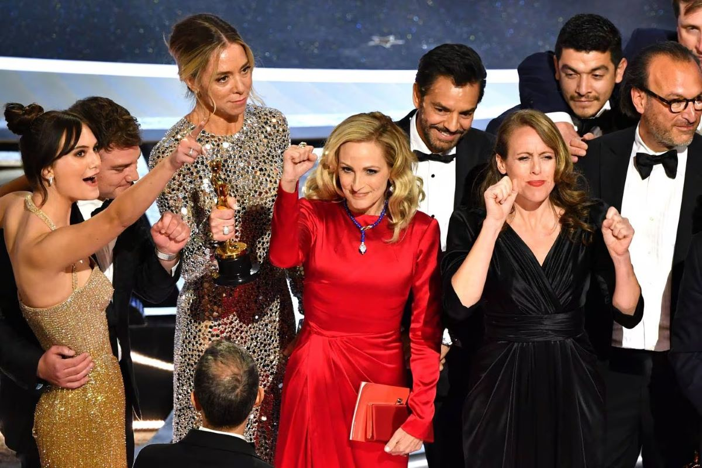
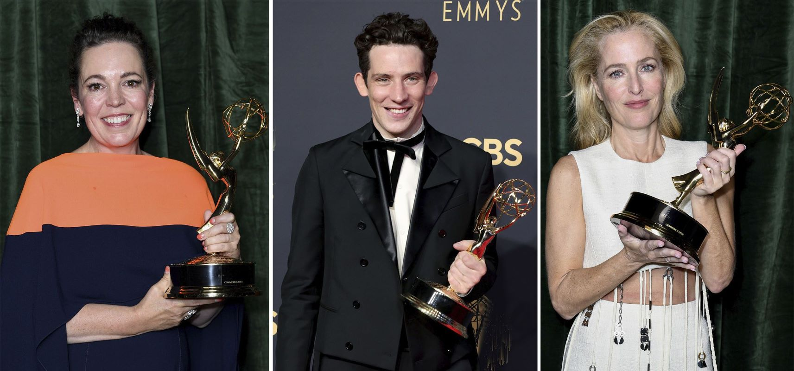

Oscars: Mejor Película - CODA
CODA: señales del corazón hizo historia al ser reconocida en la ceremonia de premios Oscar 2022 como Mejor película. Y es que es la primera vez que una producción proveniente de una plataforma de streaming se alza con la presea de la categoría más importante.
El drama sobre una familia sorda dirigido por Sian Heder, también obtuvo el premio de la Academia a Mejor guion adaptado y a Mejor actor de reparto para Troy Kotsur, logrando vencer a fuertes contendientes de estudios tradicionales de Hollywood.
CODA significa la primera estatuilla dorada para la productora Apple TV+, imponiéndose sobre rivales como Netflix, por lo que con ello ha marcado un hito en la historia de la industria del cine.
Se trata de una producción de bajo presupuesto que inicialmente figuró en el festival Sundance de 2021, donde ganó los cuatro premios principales: dirección, gran premio del jurado, audiencia y mejor ensamble actoral, para después ser lanzada en el formato de streaming. Según cifras oficiales, CODA recaudó 25 millones de dólares, siendo que según estimaciones de especialistas, habría contado con un presupuesto de 10 millones de dólares.
Emmys: Mejor Serie - The Crown
La exitosa y elegante serie sobre la casa real británica pasó como un ciclón por estos Emmy puesto que se anotó todos los premios de drama: mejor actriz (Olivia Colman), mejor actor (Josh O'Connor), mejor actriz de reparto (Gillian Anderson), mejor actor de reparto (Tobias Menzies), mejor dirección (Jessica Hobbs) y mejor guion (Peter Morgan).
Precisamente Morgan, creador y máximo cerebro de "The Crown", fue el encargado de dar las gracias desde Londres, ya que el equipo de la serie se reunió ahí para seguir los Emmy. "Vamos a tener una fiesta ahora", comentó divertido pese a que en la capital británica era de madrugada.
Morgan dijo que no tenía palabras y además comentó que en dos horas debían empezar el rodaje de nuevos episodios de "The Crown".